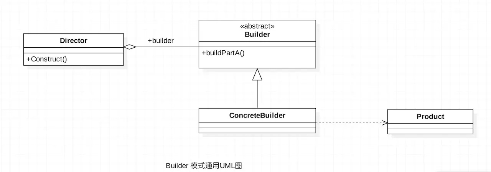

Builder模式介绍
- 建造者模式（Builder Pattern）也叫做生成器模式，Builder Design pattern 是一种创造型模式，Builder模式所解决的问题与对象的创建有关。它允许用户在不知道内部构建细节的情况下，可以更精细的控制对象的构造流程，Builder模式是为了将构造复杂对象的过程和他的部件解耦。Android 中我们最常用的Builder模式是AlterDialog.Builder。
- Builder 模式通常是以静态内部类的形式实现。
Builder模式使用场景
- 需要太多的构造函数。
- 当初始化一个对象特别复杂，如参数多，并且很多参数具有默认值时。
- 配置类的构造器的构建，将配置与目标类隔离出来。
- 相同的方法，不同的执行顺序，产生不同的事件结果时。
- 多个部件或零件，都可以装配到一个对象中，但是产生的运行结果不同时。
- 产品类非常复杂，或者产品类中的调用顺序不同产生了不同的效能。
Builder模式通用UML类图

说明
- Product产品类
ConcreateBuilder 创建该产品的内部表示，并定义它的装配过程。
- Builder抽象建造者
规范产品的组建，一般是由子类实现。
- ConcreateBuilder 具体建造者
实现抽象类定义的所有方法，并且返回一个组建好的对象。
- Director导演类
负责安排已有模块的顺序，然后告诉Builder开始建造。
Builder模式的优缺点
优点
- 封装性,使用建造者模式客户端不必知道产品内部的组成的细节,将产品本身与产品的创建过程解耦，使得相同的创建过程可以创建不同的产品对象。
- 建造者独立，容易拓展
- 增加新的具体建造者无须修改原有类库的代码，创建者类针对抽象建造者类编程，系统扩展方便，符合“开闭原则”
### 缺点
- 如果产品的内部变化复杂，可能会导致需要定义很多具体建造者类来实现这种变化，会导致具体建造者数量变得很多。
- 建造者模式所创建的产品一般具有较多的共同点，其组成部分相似，如果产品之间的差异性很大，则不适合使用建造者模式，因此其使用范围受到一定的限制。
使用实例
标准化的建造者（Builder）模式使用实例
我们以组建一台自己心仪的台式机电脑为例
电脑抽象类
/**
* Created by iuni.life on 16/8/2.
* 组建一台简单的台式机电脑,电脑抽象类 即Product角色
*/
public class Computer {
//cpu
protected String mCpu = "intel i3-4150";
//显示器
protected String mDisplay = "21寸";
//主板
protected String mBoard = "华硕 B85";
//电源
protected String mPower = "安钛克 220V";
//系统
protected String mSysOs = "Dos";
//主机箱
protected String mMainBox = "先马";
//鼠标
protected String mMouse = "贱驴";
//键盘
protected String mKeyBoard = "cherry";
//内存条
protected String mSimm = "2*4G";
//硬盘
protected String mHardDisk = "希捷 1T";
protected ComputerStant() {
}
public abstract void setSimm(String simm);
public abstract void setHardDisk(String hardDisk);
public abstract void setCpu(String cpu);
public abstract void setDisplay(String display);
public abstract void setBoard(String board);
public abstract void setPower(String power);
public abstract void setSysOs(String sysOs);
public abstract void setMainBox(String mainBox);
public abstract void setMouse(String mouse);
public abstract void setKeyBoard(String keyBoard);
@Override
public String toString() {
return "ComputerStant{" +
"mCpu='" + mCpu + '\'' +
", mDisplay='" + mDisplay + '\'' +
", mBoard='" + mBoard + '\'' +
", mPower='" + mPower + '\'' +
", mSysOs='" + mSysOs + '\'' +
", mMainBox='" + mMainBox + '\'' +
", mMouse='" + mMouse + '\'' +
", mKeyBoard='" + mKeyBoard + '\'' +
", mSimm='" + mSimm + '\'' +
", mHardDisk='" + mHardDisk + '\'' +
'}';
}
}
电脑抽象类的具体实现，我们以Mac电脑为例
/**
* Created by iuni.life on 16/8/2.
*
*/
public class MacComputer extends Computer {
protected MacComputer() {
}
@Override
public void setSimm(String simm) {
mSimm = simm;
}
@Override
public void setHardDisk(String hardDisk) {
mHardDisk = hardDisk;
}
@Override
public void setCpu(String cpu) {
mCpu = cpu;
}
@Override
public void setDisplay(String display) {
mDisplay = display;
}
@Override
public void setBoard(String board) {
mBoard = board;
}
@Override
public void setPower(String power) {
mPower = power;
}
@Override
public void setSysOs(String sysOs) {
mSysOs = sysOs;
}
@Override
public void setMainBox(String mainBox) {
mMainBox = mainBox;
}
@Override
public void setMouse(String mouse) {
mMouse = mouse;
}
@Override
public void setKeyBoard(String keyBoard) {
mKeyBoard = keyBoard;
}
}
Builder抽象类
/**
* Created by iuni.life on 16/8/2.
* builder 抽象类
*/
public abstract class Builder {
//创建显示器
public abstract Builder buildDisplay(String display);
//创建主板
public abstract Builder buildBoard(String board);
//创建电源
public abstract Builder buildPower(String power);
//创建cpu
public abstract Builder buildCpu(String cpu);
//创建系统
public abstract Builder buildSysOs(String sysOs);
//创建主机箱
public abstract Builder buildMainBox(String mainBox);
//创建鼠标
public abstract Builder buildMouse(String mouse);
//创建键盘
public abstract Builder buildKeyBoard(String keyBoard);
//创建内存条
public abstract Builder buildSimm(String simm);
//创建硬盘
public abstract Builder buildHardDisk(String hardDisk);
//创建Computer
public abstract ComputerStant create();
}
Builder 的具体实现，因为我们是要组装一个Mac 电脑，所以需要MacBuilder
/**
* Created by iuni.life on 16/8/2.
*/
public class MacBuilder extends Builder {
MacComputer macComputer = new MacComputer();
@Override
public Builder buildDisplay(String display) {
macComputer.setDisplay(display);
return this;
}
@Override
public Builder buildBoard(String board) {
macComputer.setBoard(board);
return this;
}
@Override
public Builder buildPower(String power) {
macComputer.setPower(power);
return this;
}
@Override
public Builder buildCpu(String cpu) {
macComputer.setCpu(cpu);
return this;
}
@Override
public Builder buildSysOs(String sysOs) {
macComputer.setSysOs(sysOs);
return this;
}
@Override
public Builder buildMainBox(String mainBox) {
macComputer.setMainBox(mainBox);
return this;
}
@Override
public Builder buildMouse(String mouse) {
macComputer.setMouse(mouse);
return this;
}
@Override
public Builder buildKeyBoard(String keyBoard) {
macComputer.setKeyBoard(keyBoard);
return this;
}
@Override
public Builder buildSimm(String simm) {
macComputer.setSimm(simm);
return this;
}
@Override
public Builder buildHardDisk(String hardDisk) {
macComputer.setHardDisk(hardDisk);
return this;
}
@Override
public ComputerStant create() {
return macComputer;
}
}
Director 导演类
/**
* Created by iuni.life on 16/8/2.
*/
public class Director {
Builder mBuilder = null;
public Director(Builder mBuilder) {
this.mBuilder = mBuilder;
}
//构建对象
public void constract(String mCpu, String mDisplay, String mBoard, String mPower, String mSysOs, String mMainBox, String mMouse, String mKeyBoard, String mSimm, String mHardDisk) {
mBuilder.buildCpu(mCpu);
mBuilder.buildDisplay(mDisplay);
mBuilder.buildBoard(mBoard);
mBuilder.buildPower(mPower);
mBuilder.buildSysOs(mSysOs);
mBuilder.buildMainBox(mMainBox);
mBuilder.buildMouse(mMouse);
mBuilder.buildKeyBoard(mKeyBoard);
mBuilder.buildSimm(mSimm);
mBuilder.buildHardDisk(mHardDisk);
//也可链式
// mBuilder.buildMouse(mMouse).buildCpu(mCpu).buildPower(mPower);
}
}
测试类Test
/**
* Created by iuni.life on 16/8/2.
* 经典的Builder模式实现较为繁琐,文章后面会列举一个简单的
*/
public class Test {
public static void main(String[] args) {
//构造器
Builder builder = new MacBuilder();
//Director
Director director = new Director(builder);
//封装构建过程
director.constract("intel i7", "25寸", "华硕 B85", "安钛克220V", "Mac Os", "先马", "精灵 X5", "cherry", "2*8G", "希捷500G");
//构建电脑,输出相关信息
System.out.println("My Mac Computer Info:"+builder.create().toString());
// 通过Builder来构建产品对象, 而Director封装了构建复杂产品对象对象的过程，对外隐藏构建细节。
}
}
说明
通过Builder来构建产品对象, 而Director封装了构建复杂产品对象对象的过程，对外隐藏构建细节。但是这种经典的写法有点小烦，有点繁琐，在要求不是很苛刻的情况下，我们可以用下面的方式进行实现。
一种简单的方式实现Builder模式
- 这种方式以Builder为静态内部类的方式实现，我们还是以组装一台自己的电脑为例
/**
* Created by iuni.life on 16/8/2.
* 组建一台简单的台式机电脑,电脑抽象类 即Product角色
*/
public class Computer {
//cpu
private String cpu;
//显示器
private String display;
//主板
private String board;
//电源
private String power;
//系统
private String sysOs;
//主机箱
private String mainBox;
//鼠标
private String mouse;
//键盘
private String keyBoard;
//私有化构造函数 使之不能从外部创建实例
private Computer() {
}
private void setCpu(String cpu) {
this.cpu = cpu;
}
private void setDisplay(String display) {
this.display = display;
}
private void setBoard(String board) {
this.board = board;
}
private void setPower(String power) {
this.power = power;
}
private void setSysOs(String sysOs) {
this.sysOs = sysOs;
}
private void setMainBox(String mainBox) {
this.mainBox = mainBox;
}
private void setMouse(String mouse) {
this.mouse = mouse;
}
private void setKeyBoard(String keyBoard) {
this.keyBoard = keyBoard;
}
@Override
public String toString() {
return "Computer{" +
"cpu='" + cpu + '\'' +
", display='" + display + '\'' +
", board='" + board + '\'' +
", power='" + power + '\'' +
", sysOs='" + sysOs + '\'' +
", mainBox='" + mainBox + '\'' +
", mouse='" + mouse + '\'' +
", keyBoard='" + keyBoard + '\'' +
'}';
}
//Builder 静态内部类
public static class ComputerBuilder {
//创建computer实例
private Computer computer = new Computer();
//创建Cpu
public ComputerBuilder buildCpu(String cpu) {
computer.setCpu(cpu);
return this;
}
//创建显示器
public ComputerBuilder buildDisplay(String display) {
computer.setDisplay(display);
return this;
}
//创建主板
public ComputerBuilder buildBoard(String board) {
computer.setBoard(board);
return this;
}
//创建电源
public ComputerBuilder buildPower(String power) {
computer.setPower(power);
return this;
}
//创建系统
public ComputerBuilder buildSysOs(String sysOs) {
computer.setSysOs(sysOs);
return this;
}
//创建主机箱
public ComputerBuilder buildMainBox(String mainBox) {
computer.setMainBox(mainBox);
return this;
}
//创建鼠标
public ComputerBuilder buildMouse(String mouse) {
computer.setMouse(mouse);
return this;
}
//创建键盘
public ComputerBuilder buildKeyBoard(String keyBoard) {
computer.setKeyBoard(keyBoard);
return this;
}
//组装电脑，并返回创建好的电脑
public Computer create() {
//这里可以做一些初始化操作以及一些逻辑判断
if (computer==null){
throw new IllegalStateException("computer is null");
}
return computer;
}
}
}
/**
* Created by iuni.life on 16/8/2.
*/
public class main {
public static void main(String[] args) {
//创建Builder对象
Computer.ComputerBuilder computerBuilder = new Computer.ComputerBuilder();
//组装电脑,构建组装顺序
computerBuilder.buildBoard("华硕");
computerBuilder.buildCpu("intel i7");
computerBuilder.buildDisplay("三星");
computerBuilder.buildKeyBoard("cherry");
computerBuilder.buildMainBox("杀神").buildMouse("贱驴").buildPower("安钛克").buildSysOs("Windoes 10");
//组装成一个自己想要的的电脑。
// computerBuilder 只需要知道客户想组装成什么样的电脑,并对客户不关心的如何安装进行了隐藏。
Computer computer = computerBuilder.create();
System.out.printf(computer.toString());
}
}